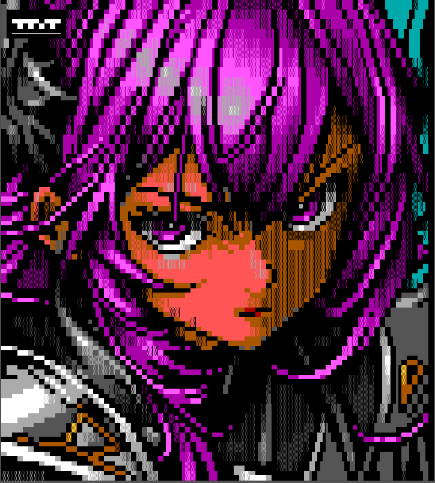
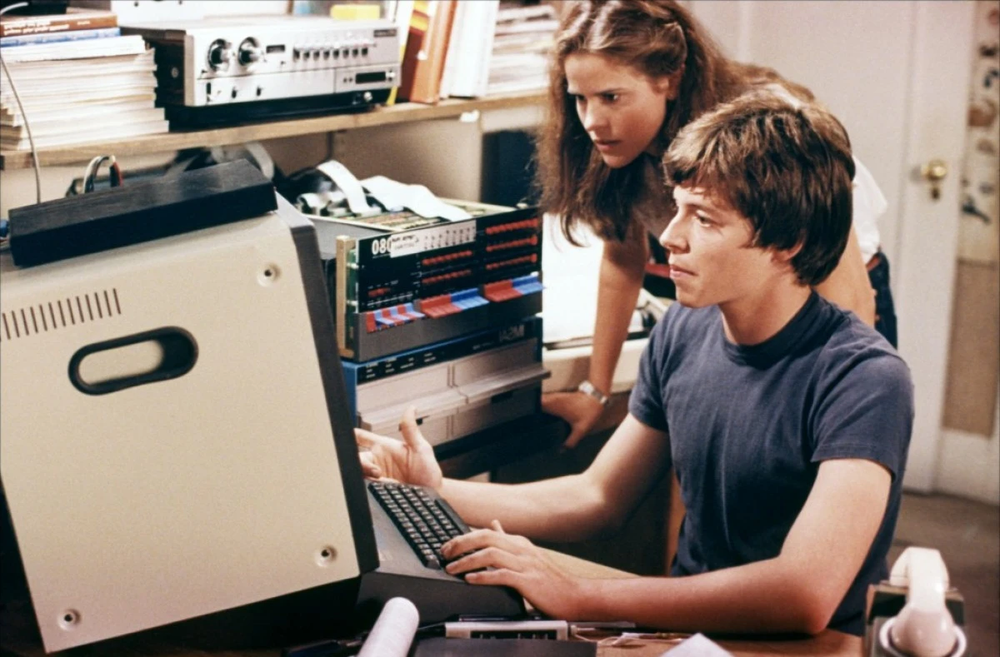
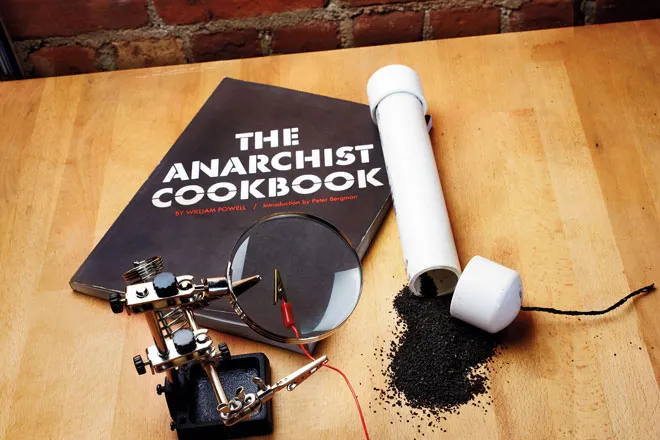
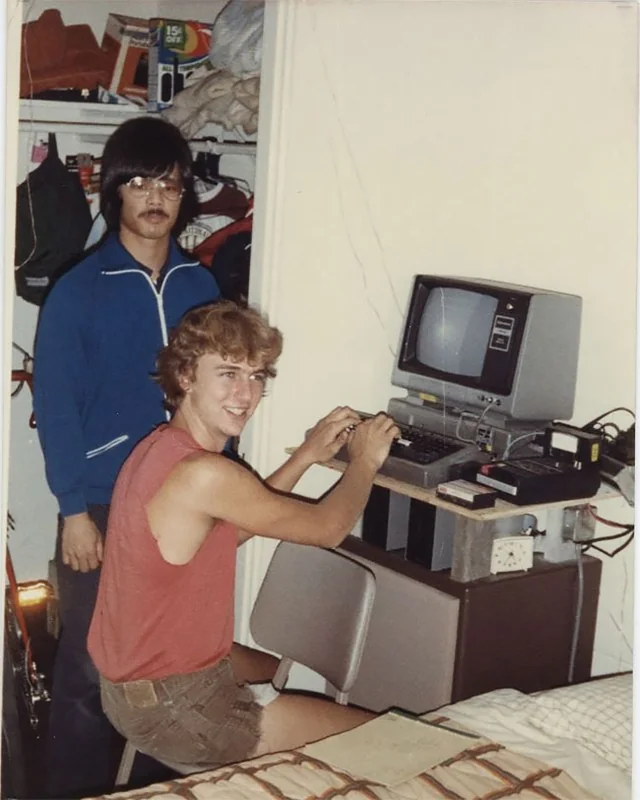
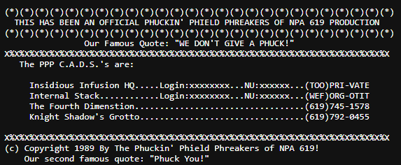

Back in the 80s and 90s a whole sub-culture grew out of the “BBS Scene” which still has some life in it today. There were brand new styles of electronic art that came to be, new types of music, and of course The Underground which consisted of the more mischievous and curious minds such as Hackers and Phreakers.
Art

Several really fun and interesting art styles came out of the BBS world. One of them which I’m sure you have used/seen/heard about is ASCII art which has its roots in typewriter art that goes back as early as 1898. With the character sets available at the time of BBSs such as CP437 and the Amiga Topaz, artists were able to generate amazing looking art using just those limited set of characters.
There was also a part of the CP437 code page that contained block type characters and other symbols which could be used along with ANSI (allowed terminals to display colors and text-based graphics). Initially there were only 16 colors to choose from, and so artists had to get really creative with techniques to introduce shading and the appearance of other colors in their artwork.
Another interesting art style that came out of the BBS world was the use of “Pack Releases” which were collections of art that were released by artists to the public. These packs were often released in a “demo” format which was a small program that would display the art in a looping animation. These demos were often used to show off the art to other artists and to get feedback on the art.
Back in the 80s and 90s new music was being created using “Tracking Software” which was used to make music in a different way than what was traditionally done with a multi-track recording sort of approach which is still mainstream today. Tracking software used audio samples and then you could indicate what pitch you wanted it, the duration, and apply effects to it. It was all laid out in a vertical format rather than the traditional horizontal, and you could just use a keyboard to “program” the timeline with what notes you wanted to build a song.
Another art type that came out of “the scene” was what was called “Demos” or the “Demoscene” where skilled programmers would create visual works of art or music that would play “live” on the machine rather than just play a pre-recorded video file. They would often push the boundaries of a given platform or technology beyond what the original makers intended. It was also a way to show off their technical prowess to the community.
They used to also (and still do today) do live shows. If you search “Demoscene” in Google or YouTube you’ll find it.
The Underground
There were maybe three different types of boards you could find in the heyday of the BBS scene.
PD boards (PD stood for Public Domain software as opposed to NPD which you’ll see next) which had legal software, standard message bases, etc.
NPD boards (or Warez as in Softwarez. NPD meant Non-Public Domain) which had illegal “cracked” or “pirated” software such as games and utilities. These were The Pirate Bay of the 80’s and 90’s.
HPAC boards. This stood for Hacking, Phreaking, Anarchy, and Carding which will be broken down further below. This is the type of board I ran in the 80’s and also oftentimes also included Warez, but not always. These types of boards, like Warez boards, also dealt in illegal topics and were targets of FBI raids such as one I was involved in called Operation Sundevil in the late 80’s.
Phreaking
Also known as “Phone Phreaking” was learning about the phone system, how it worked, and how to exploit it using homemade technologies. Oftentimes these electronic exploits were called “boxes” and had different colors. For example a “Red Box” was used to make free phone calls on pay phones. A “Beige Box” was used to tap into other people’s phone lines. A “Blue Box” was used to get free long distance calls, etc.
Hacking

This was the original heyday of the hacking world and the BBS underground sub-culture was where information related to this (and the other letters in the HPAC acronym) was spread. You would learn how various computer systems worked, how to exploit them, how to use “Social Engineering” to exploit the weakest link (humans) etc. The hackers of this era were the ones who grew up to start their own Cybersecurity firms, or join the FBI, CIA, or NSA. Blackhat, Whitehat, Blue Teams, Red Teams, Cybersecurity, etc was all born from these folks. The history is super interesting as well.
Anarchy

Super dangerous. This is where information related to Anarchy was shared. Things such as breaking into things, making bombs, and general destruction were written about and shared along with books written about the subject. I personally knew several people who were injured from dabbling in this and is why I do not share anything relating to this on my board. You can easily find anything related to this elsewhere. More on this topic under the System Bulletins on The Boneyard as well as a couple of stories.
Carding
Credit carding. Stolen credit cards and drop shipping (using someone else’s credit card to make purchases and have it shipped to an unoccupied house or other anonymous location that didn’t tie it to you directly). Total dick move, but was a part of the scene of teenage misfits.
Mischief

I’d say most phreakers/anarchists of the 80s/90s teenagers were just going out and causing mischief. Such as tapping into other people’s phone lines and listening in, dialing “976” numbers to adult one-on-one chats using someone else’s credit card, blowing up something, sneaking onto people’s property, late night shenanigans, using a portable transceiver to screw with people at a McDonald’s drive-through, and the like.
Text Files
Information regarding these topics was mainly distributed through text files. Some BBSs have these still as historical references and you can also find them on an online repository called “textfiles.com” which has several mirrors if the original can’t be found. But just head to a BBS like $20 for Beers. He’s got a butt ton of files there.

The footer of Phuckin' Phield Phreaks Magazine, where my BBS Knight Shadow's Grotto was listed in 1989.